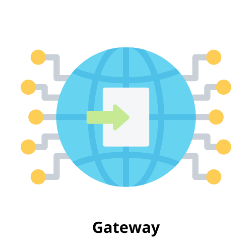

Conéctate al Mundo de las Redes
Explora la programación de redes con una web interactiva
haz click sobre las imagenes para ver el contenido
¿Qué es una VLAN?
¿Qué es una VPN?
¿Qué es una SAN?
¿Qué es un protocolo de comunicación?

¿Qué es un Gateway?
¿Qué es una DMZ?
¿Qué es un Proxy?
¿Qué es un Firewall?